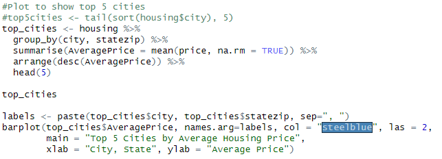
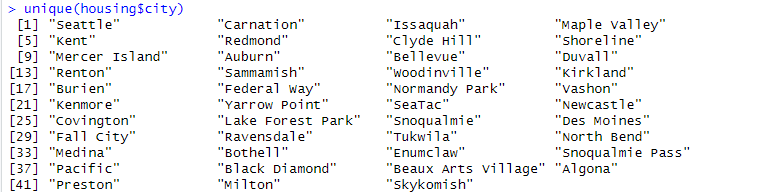
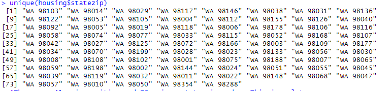
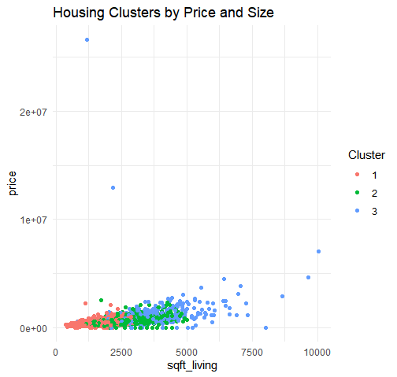
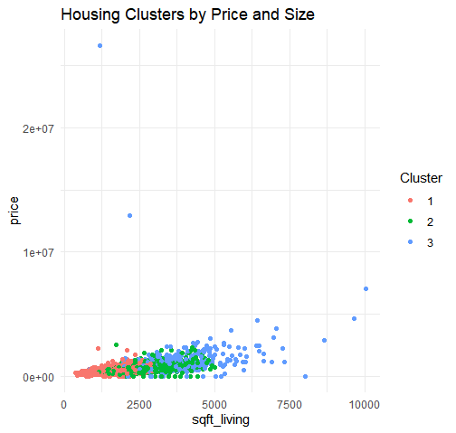

PORTFOLIO > DATA ANALYSIS & DATA SCIENCE
Analyzing Housing Data with R
This is a project analzying a dataset of over 4000 homes in Washington (State). I'll be using R to do the following; exploratory data analysis, multiple regression, and clustering in an attempt to gain some insights on the houses. (Link to the dataset: https://www.kaggle.com/datasets/fratzcan/usa-house-prices?select=USA+Housing+Dataset.csv)
Sometimes when analysing data, there may not always be an "interesting" or clear result. Trying hard to find one can often result in skewed findings. This is an example of confirmation bias - where one already has a strong opinion, and seeks to find information that supports it, instead of basing their view on the objective information.
Without further adieu, lets dive in. We will start by showing the columns for this dataset.
- Date: The date when the property was sold. This feature helps in understanding the temporal trends in property prices.
- Price: The sale price of the property in USD. This is the target variable we aim to predict.
- Bedrooms: The number of bedrooms in the property. Generally, properties with more bedrooms tend to have higher prices.
- Bathrooms: The number of bathrooms in the property. Similar to bedrooms, more bathrooms can increase a property’s value.
- Sqft Living: The size of the living area in square feet. Larger living areas are typically associated with higher property values.
- Sqft Lot: The size of the lot in square feet. Larger lots may increase a property’s desirability and value.
- Floors: The number of floors in the property. Properties with multiple floors may offer more living space and appeal.
- Waterfront: A binary indicator (1 if the property has a waterfront view, 0 otherwise). Properties with waterfront views are often valued higher.
- View: An index from 0 to 4 indicating the quality of the property’s view. Better views are likely to enhance a property’s value.
- Condition: An index from 1 to 5 rating the condition of the property. Properties in better condition are typically worth more.
- Sqft Above: The square footage of the property above the basement. This can help isolate the value contribution of above-ground space.
- Sqft Basement: The square footage of the basement. Basements may add value depending on their usability.
- Yr Built: The year the property was built. Older properties may have historical value, while newer ones may offer modern amenities.
- Yr Renovated: The year the property was last renovated. Recent renovations can increase a property’s appeal and value.
- City: The city where the property is located. Different cities have distinct market dynamics.
- Statezip: The state and zip code of the property. This feature provides regional context for the property.
- Country: The country where the property is located. While this dataset focuses on properties in Australia, this feature is included for completeness.
We're going to define our dataset and view it.
housing <- read.csv("USA Housing Dataset.csv")
View(housing)
As usual, we will check for any duplicate data, missing columns, etc. And download any libraries to make this process easier.
install.packages("dplyr")
library(dplyr)
housing <- na.omit(housing)
housing <- housing %>% distinct()
summary(housing)

So there were no missing values or duplicates in the data. Let's create some plots.
Exploratory Data Analysis
#Scatter plot by
plot(housing$bedrooms, housing$price, pch=16, cex=1)
And what we get is this:

As we can see, the price tends to peak at 4-5 bedrooms, but lowers at 6. Perhaps after a certain point, demand levels off? Or perhaps the 4-5 bedroom houses are in the most desirable locations? It is almost normally distributed, with a slight left skew.
#Scatter plot by
plot(housing$sqft_living, housing$price, pch=16, cex=1)
And what we get is this:

As we can see, the pricing is heavily concentrated at below 6000 sq ft, with a few outliers at either end of the data.
#Scatter plot by
plot(housing$yr_built, housing$price)
And what we get is this:

Oddly enough, the price seems to not correlate much at all with the year the house was built, save for a few minor outliers.
Now lets make a plot of the top 5 cities to see if we can get any quick insight from that:
 As we can see from the plot, there isn’t a major differentiator between the top cities in this dataset.
As mentioned before, there are datasets where there won’t be any eye-catching trends that stick out upon surface-level inspection.
So we will have to do some more advanced data science to derive any insight (if at all) from this dataset.
As we can see from the plot, there isn’t a major differentiator between the top cities in this dataset.
As mentioned before, there are datasets where there won’t be any eye-catching trends that stick out upon surface-level inspection.
So we will have to do some more advanced data science to derive any insight (if at all) from this dataset.
One thing that we can do is multiple regression to figure out which variables influence the price of housing in this area.
Data Preprocessing & Cleaning
For starters, we have to handle categorical variables...
unique(housing$city)
unique(housing$statezip)


As we can see, there are 41 unique cities and 73 unique state zip codes. This is a lot, so one-hot encoding to convert these into numerical variables may be impractical. This large amount of variability may also show that these columns may not be impactful. Lastly, since the cities are all in Washington, we can drop city and state as variables for now. Perhaps we may use clustering later. This issue also applies to dates when we run it.
unique(housing$date)
So let’s drop city, statezip, country, and date for now. Ideally we would group date by decade. But based on our prior plot, date didn't seem to make too much of an impact on the price.
#Drop date, city, statezip, street, and country
new_housing <- subset(housing, select = -c(`date`, `city`, `statezip`, `street`, `country`))
sapply(new_housing, class)
Now let’s begin the multiple regression. We will start by scaling the data.
#We will install caTools in order to split our data
install.packages('caTools')
library(caTools)
We split the data below in order to give the program some sample data...
#Now we will train the model
set.seed(123)
split = sample.split(new_housing$price, SplitRatio = 0.8)
training_set = subset(new_housing, split == TRUE)
test_set = subset(new_housing, split == FALSE)
Lastly we will do feature scaling...
#Feature Scaling
ntraining_set = scale(training_set)
ntest_set = scale(test_set)
scaled_training <- ntraining_set
scaled_training[, -which(names(ntraining_set) == "Price")] <- as.data.frame(scale(training_set[, -which(names(training_set) == "Price")]))
Multiple Regression
Now we do the equation.
regressor <- lm(formula = price ~., data = scaled_training )
summary(regressor)
Output:

Based on the result, it seems like the regression model doesn’t fit this dataset. The R^2 isn’t very high, implying that the variables do not account for the variability in pricing. Additionally, the F-statistic shows that the model is not a good fit for this data.
# Because our R^2 isn't good, we will cluster the data instead.Clustering
# Select only numeric columns (excluding IDs, if any)
housing_numeric <- training_set %>%
select_if(is.numeric) %>%
na.omit()
# Scale the data to ensure equal weighting
housing_scaled <- scale(housing_numeric)
library(factoextra)
fviz_nbclust(housing, kmeans, method="wss")
This generates a plot that shows where the elbow bends...
set.seed(123)
kmeans_result <- kmeans(housing_scaled, centers= 3, nstart=25)
training_set$Cluster <- as.factor(kmeans_result$cluster)
aggregate(training_set[, c("price", "sqft_living", "bedrooms", "bathrooms", "floors")],
by = list(Cluster = training_set$Cluster),
mean)
 

This is our cluster table. As we can see, the data can be divided into 3 clusters...
Cluster 1 → Smaller, more affordable homes- ~1,600 SqFt
- 3 bedrooms, ~1.7 bathrooms
- Likely entry-level or smaller family homes
- ~2,450 SqFt
- ~3.6 bedrooms, ~2.6 bathrooms
- Likely standard suburban houses
- ~3,680 SqFt
- 4+ bedrooms, 3+ bathrooms
- Significantly higher price (~$1.19M)
- Likely located in premium areas with larger lots
Results & Interpretation
So at last, we have gotten some type of info from this dataset. This project shows the versatility and expedience of using a programming language/framework like R, as several different types of data analysis and data science are quite easy to formulate.
Cluster 3 (Luxury homes) is heavily concentrated in high-end ZIP codes, while affordable homes (Cluster 1) are more dispersed. This suggests that location plays a key role in housing prices, but features like size and number of bedrooms also influence clustering. We see a preview of this with our early plots!.
Admittedly the findings from this dataset are not profound – finding out that the housing in Washington tends to center around starter homes, mid-range homes, and high-end homes with a few mansions should not be a startling revelation or anything like that. A more profound analysis can be find by incorporating data from around the whole country, or using demographics, so that more unique insights can be gathered.
But it is worth it to understand the importance of not looking for results to fit a conclusion. Deeming this project “unsuccessful” since nothing interesting was found would be ill-advised, as there are times where there isn’t anything “interesting”. And that’s okay, because trying to look for something interesting may often lead to subconsciously misinterpreting results.
Perhaps you the reader can find some more interesting results from this dataset? Here is a link:
R Washington Housing Project